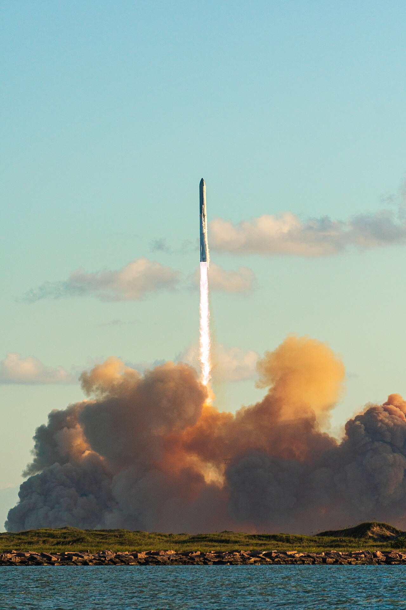

Starship, najväčšia raketa, aká kedy letela
Starship je dvojstupňový nosný systém firmy SpaceX, navrhnutý tak, aby sa dal celý opakovane použiť ako lietadlo, nie zahodiť po jednom lete.
Tvorí ho prvý stupeň Super Heavy a horný stupeň, loď Starship, a oba poháňajú motory Raptor spaľujúce metán s kvapalným kyslíkom.
Má vynášať družice Starlink, neskôr pristávať s astronautmi NASA na Mesiaci a raz dopraviť ľudí až na Mars.
Z čoho sa raketa skladá
Schéma je zjednodušená a nie je v mierke. Čísla na schéme zodpovedajú popisom vpravo.
Vlastná ilustrácia, zjednodušené a nie v mierke
Horný stupeň: loď Starship
- 01
Loď Starship
Horný stupeň, ktorý nesie náklad alebo posádku na obežnú dráhu a sám sa vracia späť na Zem.
- 02
Predné a zadné klapky
Štyri pohyblivé plochy, ktorými loď pri páde atmosférou riadi polohu ako parašutista rukami a nohami.
- 03
Tepelný štít
Tisíce čiernych keramických dlaždíc na jednej strane lode, ktoré ju chránia pred horúčavou pri návrate do atmosféry.
- 04
Nákladový priestor
Vnútorný priestor s otváracími dvierkami, cez ktoré loď vypúšťa satelity Starlink.
- 05
Motory lode
Šesť motorov Raptor: tri pre let v atmosfére a tri s väčšími dýzami pre vákuum vesmíru.
Spojenie a prvý stupeň: Super Heavy
- 06
Medzistupeň
Prstenec s otvormi, ktorý umožňuje lodi zapáliť motory ešte pred oddelením od boostera (takzvané horúce oddelenie).
- 07
Mriežkové kormidlá
Mriežky na vrchu boostera, ktoré ho pri návrate navádzajú a za ktoré ho veža dokáže zachytiť.
- 08
Nádrže
Dve obrovské nádrže na tekutý metán (CH₄) a tekutý kyslík (LOX), ktoré tvoria väčšinu objemu rakety.
- 09
Super Heavy
Prvý stupeň, ktorý zostavu zdvihne zo zeme, po pár minútach sa oddelí a vráti sa ku štartovacej veži.
- 10
33 motorov Raptor
Motory na dne boostera, ktoré spolu dávajú najväčší ťah, aký kedy raketa mala.
Testovacie lety a čo príde ďalej
Prehľad všetkých 14 doterajších testovacích letov a plánovaných štartov. Stav k 5. novembru 2026, dátumy sú v UTC.
Výsledky letov 1 až 16
2023
- Let 120. 4. 2023Neúspech
Raketa sa pred oddelením stupňov roztočila a štart poškodil rampu. B7 / S24
- Let 218. 11. 2023Neúspech
Stupne sa oddelili, no booster aj loď sa potom stratili. B9 / S25
2024
- Let 314. 3. 2024Úspech
Loď dosiahla plánovanú dráhu, ale booster aj loď sa pri návrate stratili. B10 / S28
- Let 46. 6. 2024Úspech
Booster aj loď prvýkrát riadene pristáli na hladine. B11 / S29
- Let 513. 10. 2024Úspech
Štartovacia veža prvýkrát zachytila vracajúci sa booster. B12 / S30
- Let 619. 11. 2024Úspech
Booster presmerovali do mora, loď pristála na hladine za denného svetla. B13 / S31
2025
- Let 716. 1. 2025Neúspech
Booster bol zachytený, prvá loď verzie Block 2 sa však stratila. B14 / S33
- Let 86. 3. 2025Neúspech
Booster bol opäť zachytený, loď stratila motory a kontrolu. B15 / S34
- Let 927. 5. 2025Neúspech
Prvý opakovane použitý booster; stratil sa booster aj loď. B14-2 / S35
- Let 1026. 8. 2025Úspech
Loď vypustila makety satelitov a pristála asi 3 m od cieľa. B16 / S37
- Let 1113. 10. 2025Úspech
Posledný let verzie Block 2, oba stupne riadene pristáli na hladine. B15-2 / S38
2026
- Let 1222. 5. 2026Čiastočný úspech
Prvý let novej verzie V3. Loď splnila úlohy, booster v Mexickom zálive zlyhal. B19 / S39
- Let 1324. 7. 2026Čiastočný úspech
Loď vypustila 20 satelitov Starlink V3, booster dopadol na vodu príliš rýchlo. B20 / S40
- Let 1428. 9. 2026Úspech
Prvý let na obežnú dráhu: loď vypustila 26 satelitov Starlink V3 a pristála po zhruba troch hodinách namiesto plánovaných desiatich. B21 / S41
- Let 15najskôr 12. 11. 2026Plánovaný
Prvý pokus zachytiť vežou aj loď, nielen booster. Termín závisí od povolenia FAA. B22 / S42
- Let 16najskôr 10. 12. 2026Plánovaný
Očakáva sa prvý štart z rampy LC-39A na Floride. B23 / S43
2027 (odhady)
- 1. štvrťrokPlánovaný
Ukážka prečerpávania paliva medzi dvoma loďami na obežnej dráhe pre NASA.
- Polovica rokaPlánovaný
Skúška spojenia lode Orion s prototypom lunárnej verzie Starship HLS (Artemis III).
- 4. štvrťrokPlánovaný
Bezposádkový skúšobný let lunárnej verzie Starship HLS k Mesiacu.
Zdroje harmonogramu
- Wikipedia: SpaceX Starship flight tests (dátumy, označenia boostera a lode, výsledky aj plánované lety; čítané 5. 11. 2026)
- CNBC: SpaceX launches its massive Starship rocket into orbit for the first time (Let 14, 28. 9. 2026)
- NPR: SpaceX launches its biggest, most beefed-up Starship yet (Let 12, prvý let V3)
- Starlust: When will Starship Flight 15 launch? (cieľový termín Letu 15 podľa FAA)
Označenie „čiastočný úspech“ je zjednodušenie: loď splnila úlohy, booster nie. Plánované termíny sa často posúvajú.
Starship pri štarte
Skutočné fotky zo štartov v Starbase v Texase.



Posledný štart: Let 14
Záznam zo 28. septembra 2026, keď sa Starship prvýkrát dostala na obežnú dráhu.
Odkaz: https://www.youtube.com/watch?v=CxHNK4UeVP4 · kanál VideoFromSpace (Space.com)